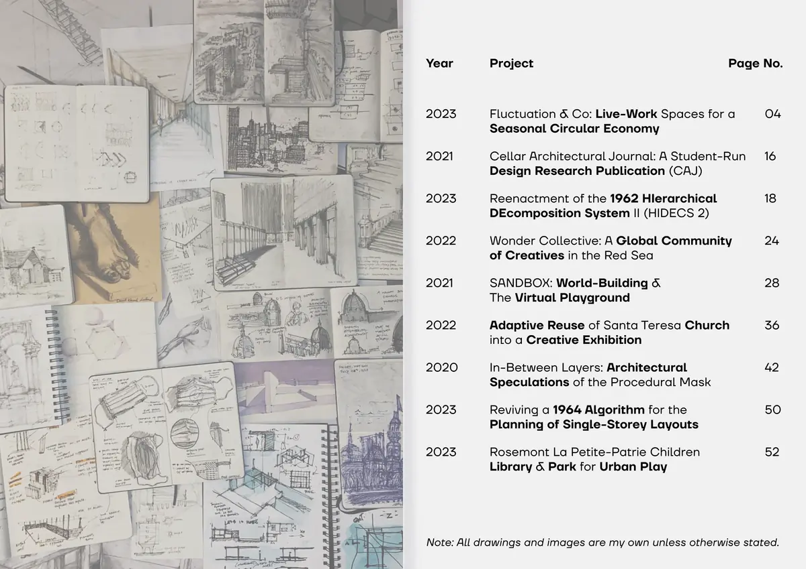
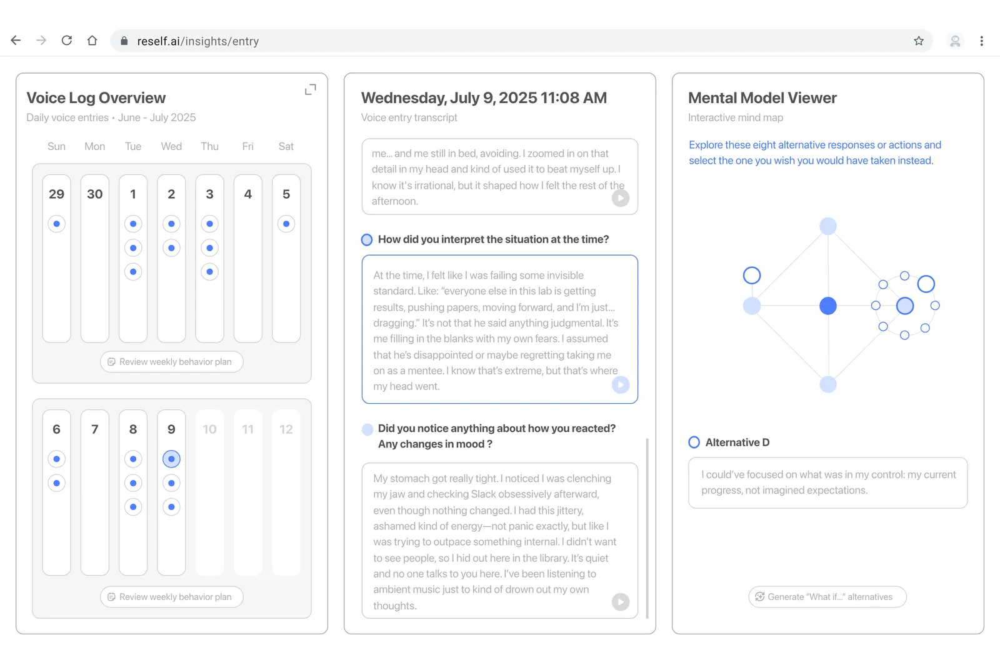
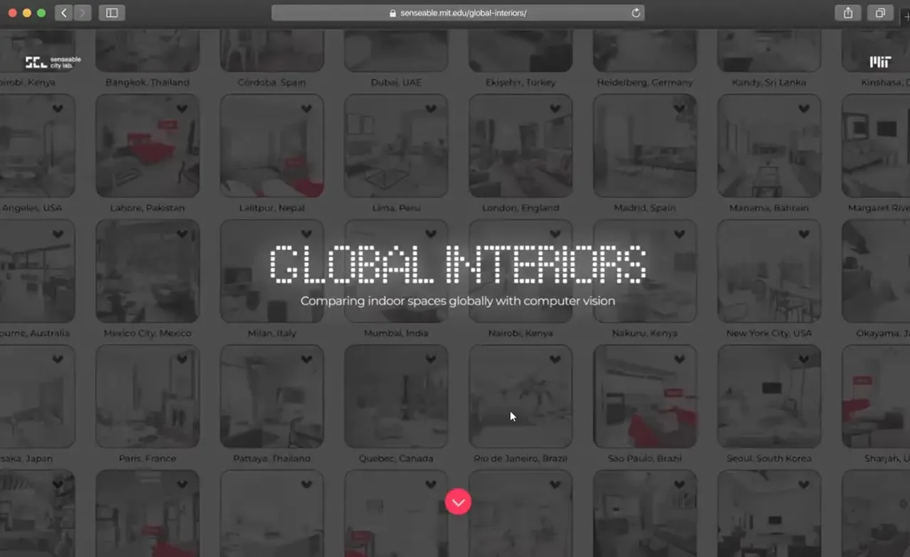
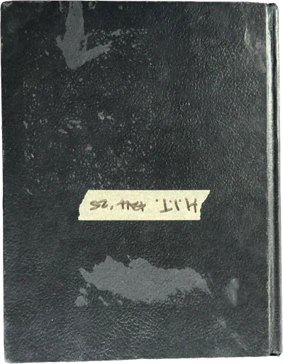
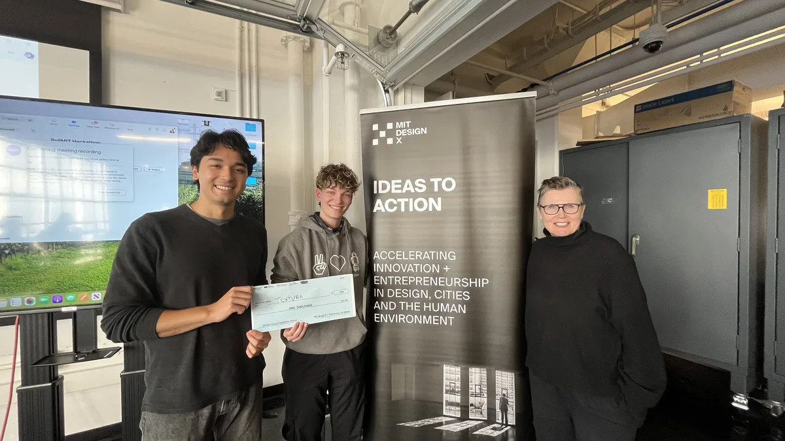
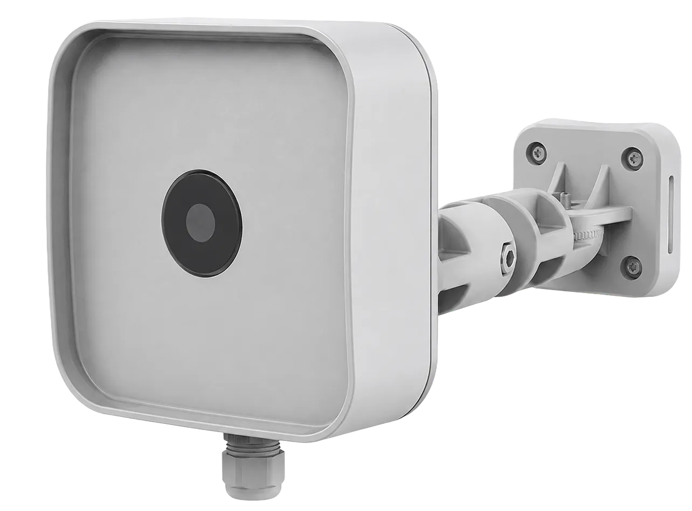
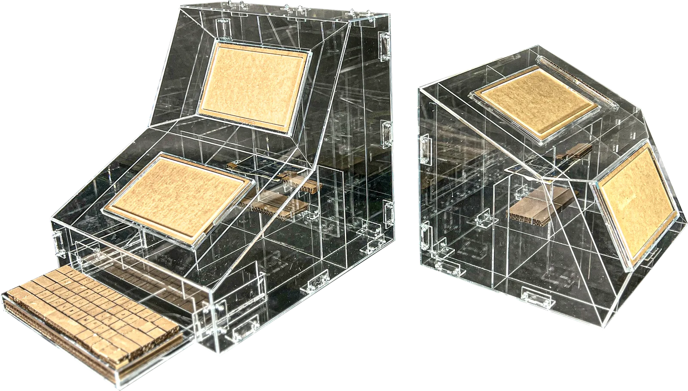
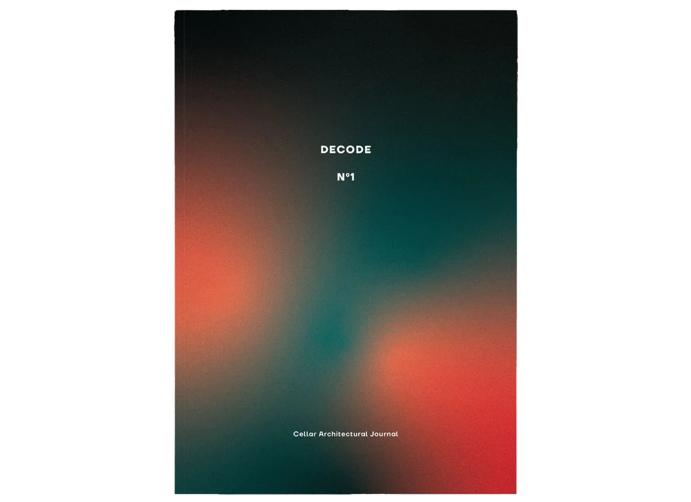

Harvard + MIT Acceptance Portfolio
Multidisciplinary design projects from 2020–2023
- RoleNot recorded
- Years2024
- TopicsArchitecture, Urbanism, Product design

Harvard + MIT Acceptance Portfolio
Multidisciplinary design projects from 2020–2023

Re:Self
A reflection-to-action system for adaptive change

Global Interiors
A geography of indoors for analyzing global ways of living using computer vision
David's Journal
Design diary, community notes, and product-thinking fragments

Design Sketches
Two captured MIT design sketchbooks shown as explorable physical objects

EcoFabriq
Connecting designers with sustainable biomaterials

Pumba Desktop
B2G solution for centralized on-street parking data analytics

HIDECS 2 Reenactment
HIerarchical DEComposition System II (1962)

N°1 Decode (CAJ)
A student-run design research publication